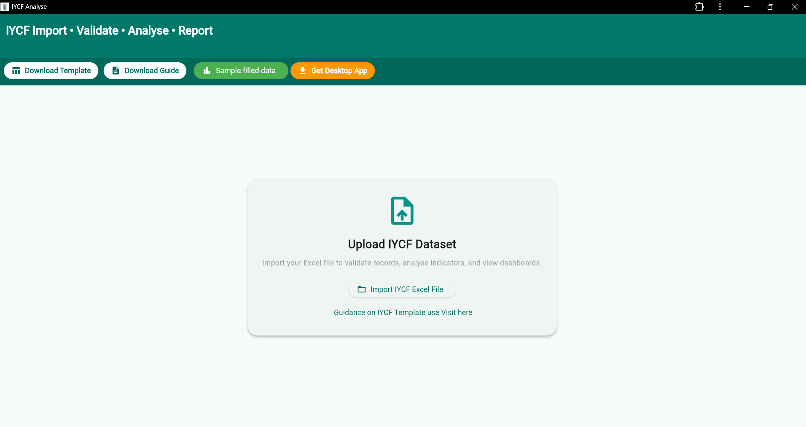
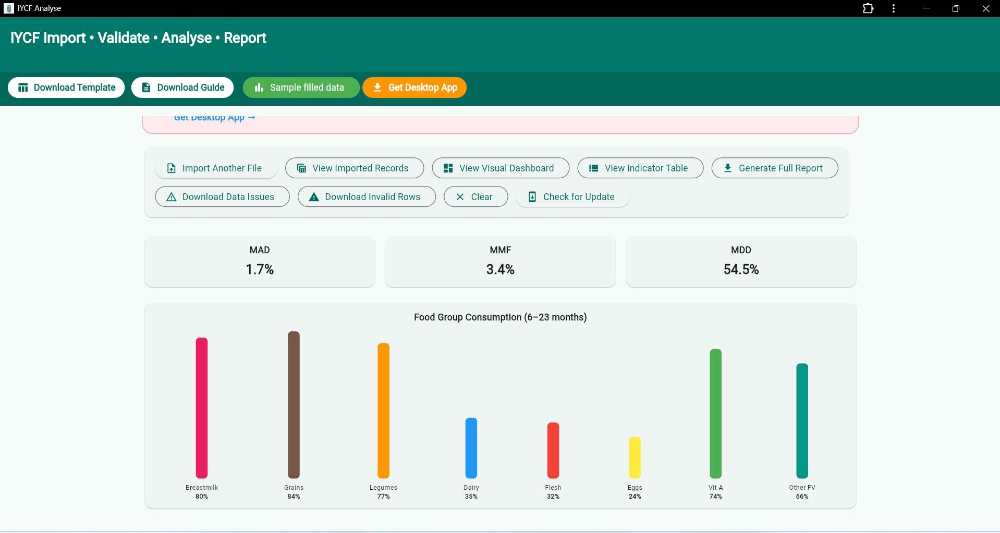
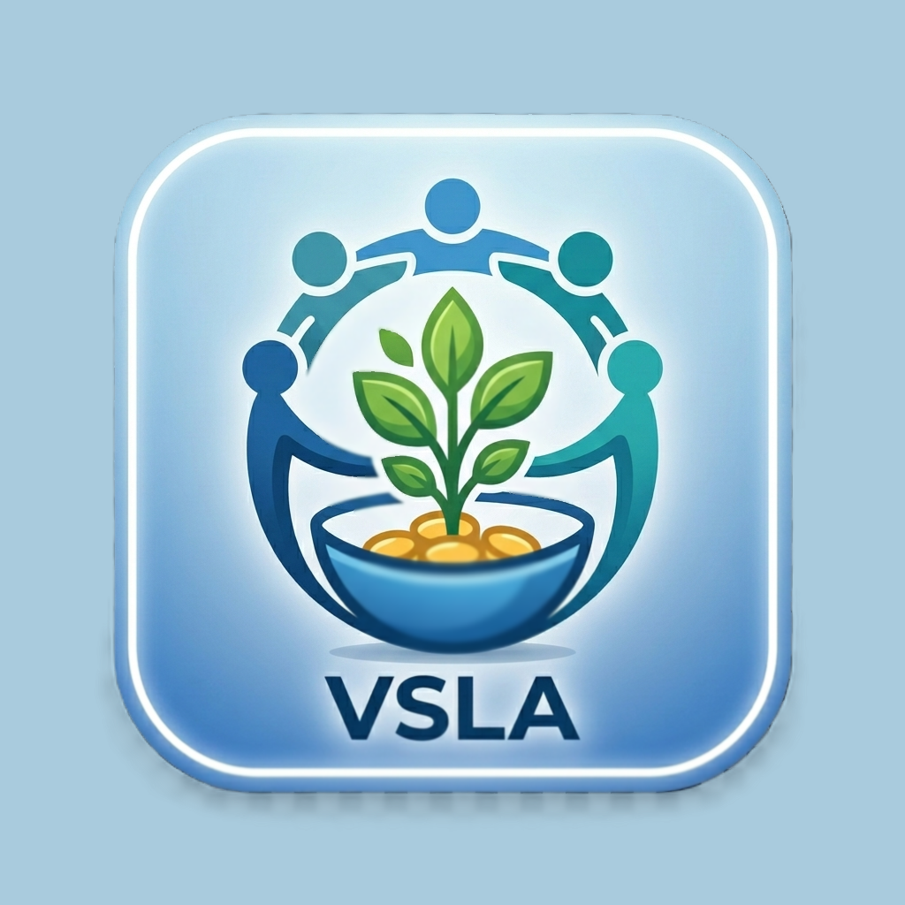
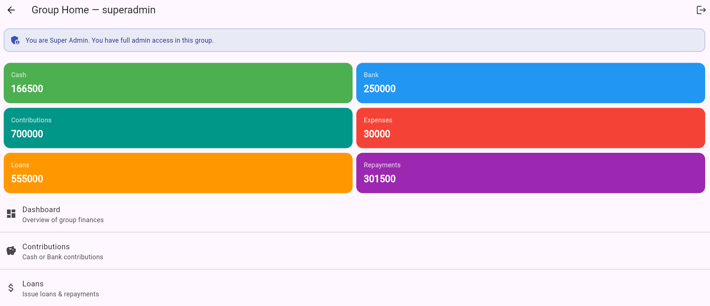

Your hub for Professional Nutrition, Health data analysis systems applications/software tools.
Analyse Infant and Young Child Feeding data quickly and accurately.


A powerful tool for analyzing Infant and Young Child Feeding (IYCF) data. Generate insights, track indicators, and support evidence-based nutrition decisions.
For NGOs & Health Programs:
Designed for nutrition surveys, field data analysis, and reporting.
Improve data accuracy and speed up reporting for donor and program requirements.
Try the web version instantly — no installation required. Full reporting available in the licensed desktop version.
View Details Open Web ToolCalculate BMI, Z-scores (WHZ, WFA, HFA), and perform clinical nutrition assessment using professional tools powered by WinxLibrary.
Open Tools
Digitise and monitor your VSLA groups with ease.

A complete digital platform for Village Savings and Loan Associations (VSLA). Manage members, track contributions, loans, and group finances securely online.
For NGOs & Development Partners: Ideal for digitizing community savings groups, improving transparency, and generating reliable financial reports across multiple VSLA groups.
Prototype available for testing and customization.
Try the Web App prototype Request Setup / Partner